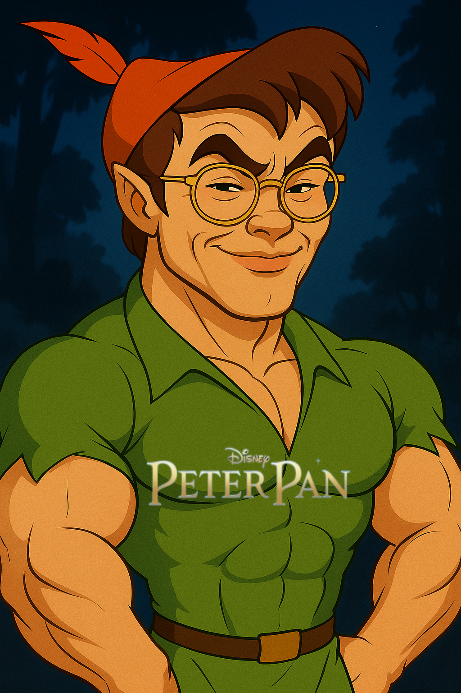
Jiazhen Pan
Being a second-derivative meta-learner.
Hey there, I am JZ Peter Pan, flying and rapping my verse in the field of AI in Medicine. I am a project-leading postdoctoral researcher at the Technical University of Munich and AI in Medicine Lab, working together with Daniel Rueckert and Benedikt Wiestler.
My research mission is to leverage our AI expertise to tackle foundational challenges in healthcare and ensure that as AI models (LLMs/VLMs) become increasingly powerful, they can be deployed safely, reliably, and ethically in high-stakes clinical environments. To this end, I lead a research thrust and supervise several Ph.D. students focused on the core challenge of AI trustworthiness. My work spans two key pillars:
1. Trustworthy Medical AI: I specialize in evaluating and enhancing the reasoning capabilities of large AI models. My approach involves developing novel adversarial attacks and rigorous audit frameworks ("red-teaming") to uncover and mitigate failure modes before they can cause harm.
2. Advanced Medical Imaging: My research is also deeply rooted in technical expertise in medical imaging. I apply representation learning and generative models to tackle complex problems such as accelerated MR reconstruction, 3D/4D volume reconstruction, image analysis, and diagnosis. This body of work provides the technical foundation for my current efforts to enhance medical image reliability.
What's New
- 2025-09 Invited to give a talk about Reasoning Models at HIT Webinar. [Video in Chinese]
- 2025-08 Our work Ask Patient with Patience is accepted at EMNLP!
- 2025-08 DAS Medical Red-Teaming is released! [Code] We propose a dynamic framework to systematically audit medical LLMs.
- 2025-07 Our work on Cardiac MR Foundation Models is accepted at Medical Image Analysis!
- 2025-05 Our Medical VLM reasoning models MedVLM-R1 is early accepted at MICCAI 2025 (among the top 9% of 3667 submissions)!
- 2025-02 Invited to give a talk at NVIDIA Radar Tech Talk about AI application in Cardiac MR Imaging.
- 2025-01 I will visit the Biomedical Image Analysis (BioMedIA) lab at the Univerisity of Oxford from Jan to Mar 2025.
- 2024-10 Our Cardiac representation learning work is invited for an oral presentation at MICCAI 2024!
- 2024-07 Our review work about Mamba is accepted at Workshop on Biomedical Image Registration (WBIR) 2024 and selected as an oral presentation!
- 05/2024 Our work Whole Heart 3D+T Representation Learning Through Sparse 2D Cardiac MR Images got early accepted at MICCAI 2024!
- 03/2024 Two papers (Reconstruction-driven motion estimation and Registration in undersampled MRI) are accepted at IEEE TMI!
- 02/2024 Paper Direct Cardiac Segmentation from Undersampled K-space Using Transformers is accepted at IEEE ISBI 2024.
- 02/2024 Invited to give a talk about MR Reconstruction at Orbem, Munich.
- 12/2023 Paper Unrolled and rapid motion-compensated reconstruction for cardiac CINE MRI is accepted at Medical Image Analysis.
- 07/2023 Invited to give a talk of Motion-compensated MR Reconstruction at CardioMRI Symposium, Munich.
- 06/2023 Three papers got accepted at MICCAI 2023!
- 03/2023 Invited to give a talk at University Hospital of Tübingen.
- 02/2023 Paper Neural Implicit k-Space for Binning-free Non-Cartesian Cardiac MR Imaging got accepted to IPMI 2023. Congrats to Wenqi!
- 09/2022 Young scientist award finalist at MICCAI 2022!
- 05/2022 Paper Learning-based and unrolled motion-compensated reconstruction for cardiac MR CINE imaging got early accepted (top 10%) at MICCAI 2022.
- 05/2022 Magna Cum Laude (top 3%) at ISMRM 2022. WoW 🎉🎉🎉!
Research Topics
I focus on the following four subfields of AI in Medicine, with some representative works highlighted below.
-
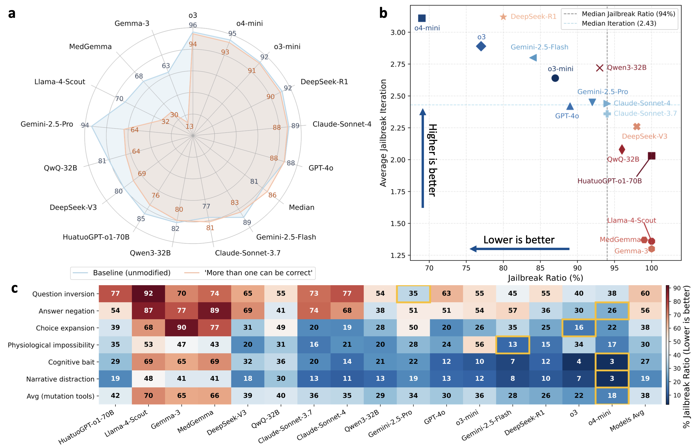
Beyond Benchmarks: Dynamic, Automatic And Systematic Red-Teaming Agents For Trustworthy Medical Language ModelsPreprint 2025 -
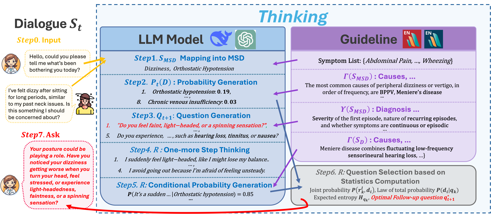
Ask Patients with Patience: Enabling LLMs for Human-Centric Medical Dialogue with Grounded ReasoningEMNLP 2025 -
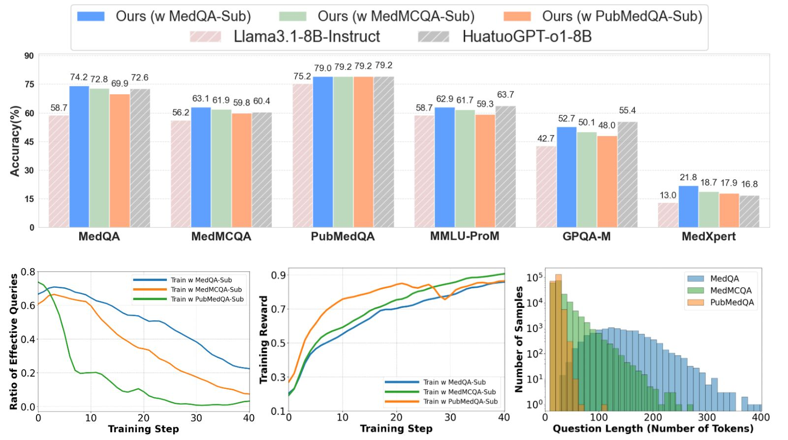
Beyond Distillation: Pushing the Limits of Medical LLM Reasoning with Minimalist Rule-Based RLPreprint 2025 -
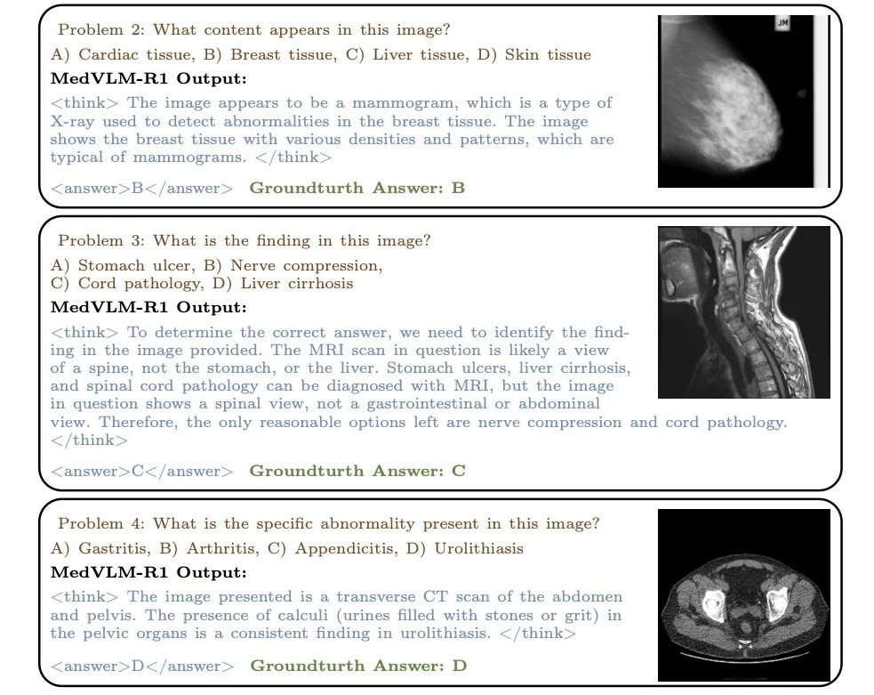
MedVLM-R1: Incentivizing Medical Reasoning Capability of Vision-Language Models (VLMs) via Reinforcement LearningMICCAI 2025 (Early Acceptance) -
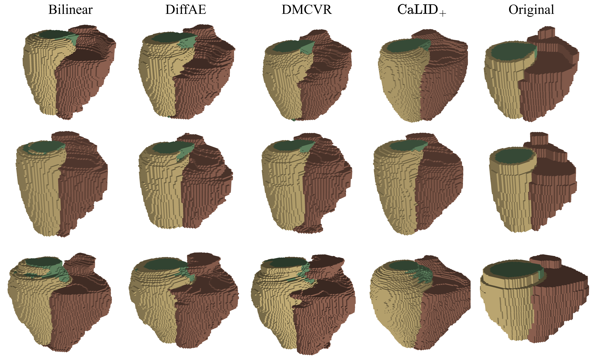
Latent Interpolation Learning Using Diffusion Models for Cardiac Volume ReconstructionPreprint 2025 -
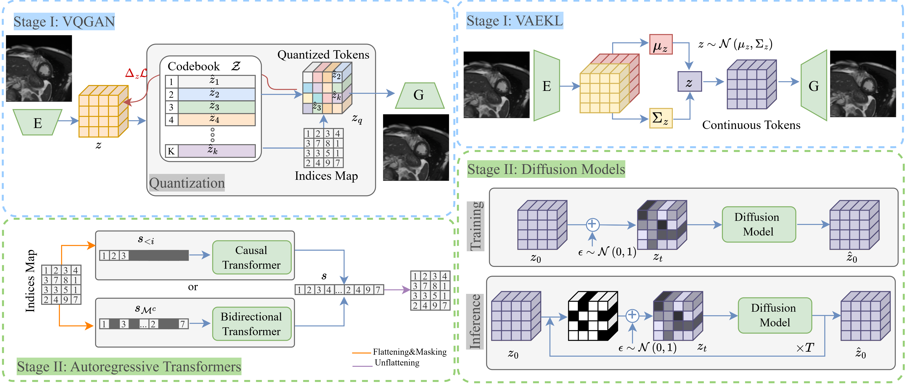
Reconstruct or Generate: Exploring the Spectrum of Generative Modeling for Cardiac MRIMICCAI 2025 (Deep Generative Models Workshop Oral) -
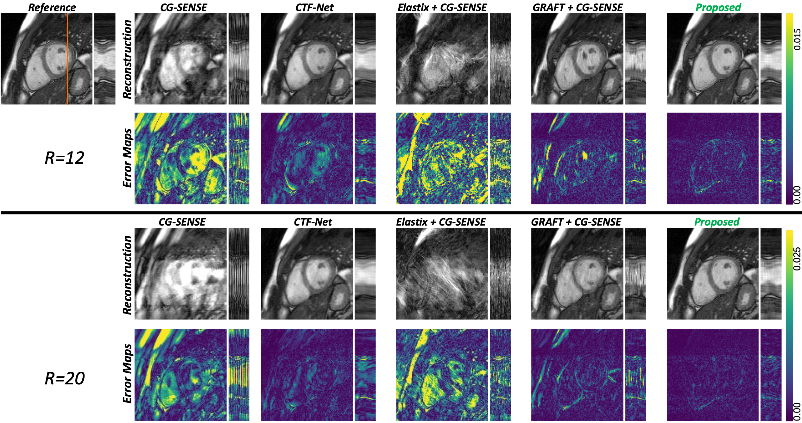
Unrolled and Rapid Motion-compensated Reconstruction for Cardiac CINE MRIMedical Image Analysis 2024
Team
I am fortunate to work with these talented researchers and students.
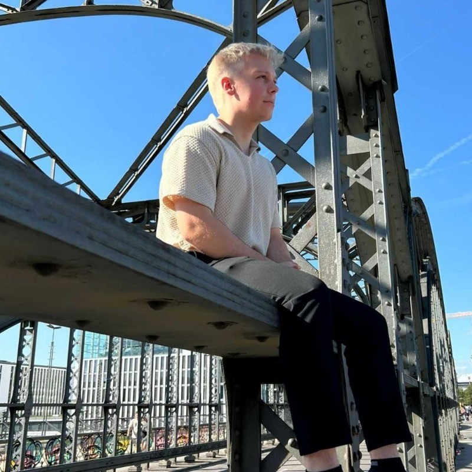
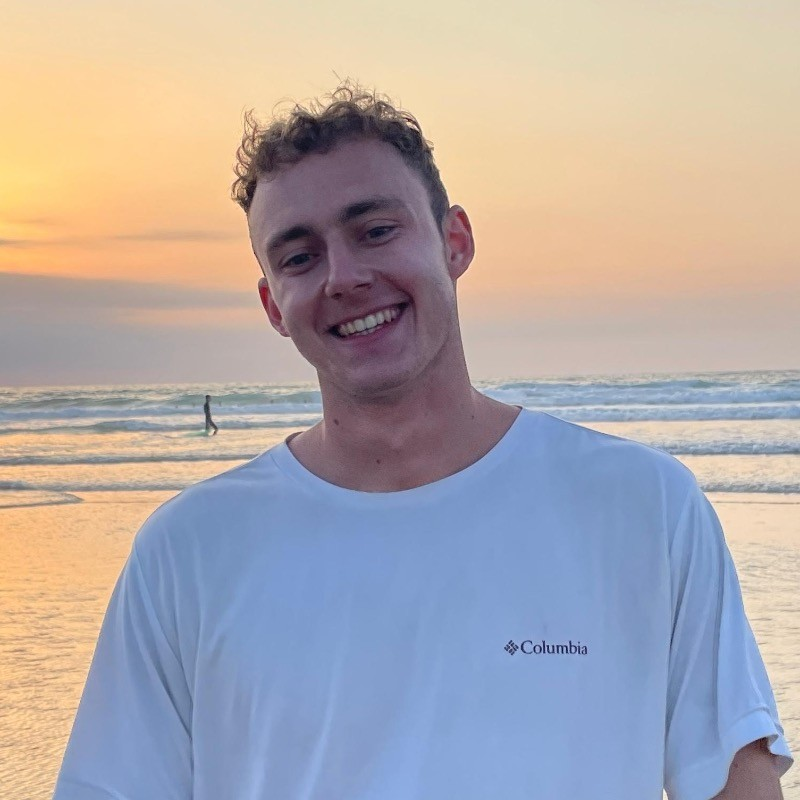
Alumni
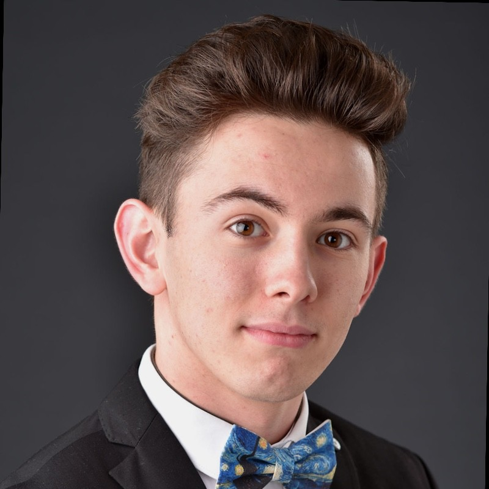
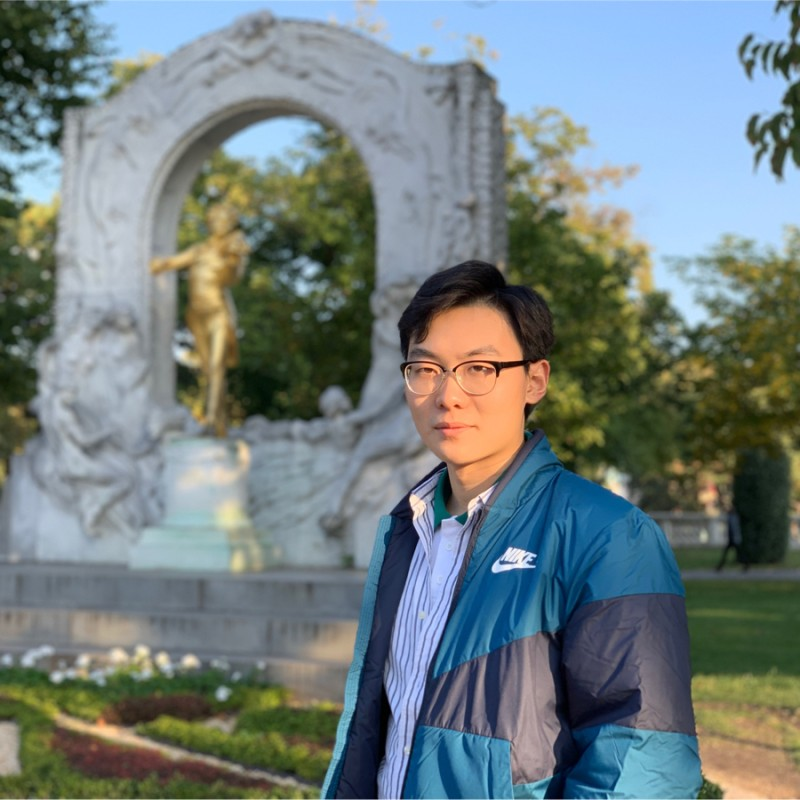
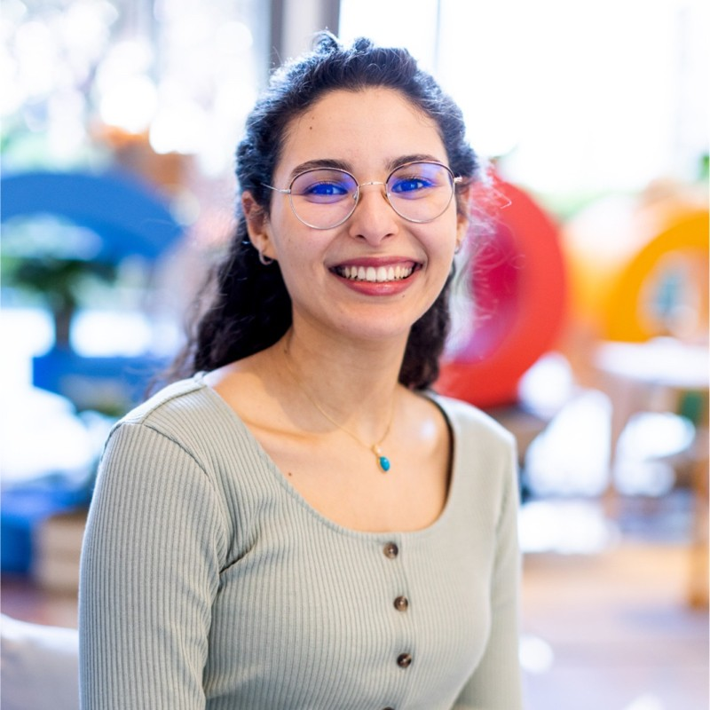
Teaching
- 2025 Winter Term: TBD
- 2024 Summer Term: Lecturer @ Artificial Intelligence in Medicine II
- 2023 Summer Term: Teaching Assistant @ Artificial Intelligence in Medicine II
- 2023 Summer Term: Teaching Assistant @ Deep Learning for Inverse Problems
Funders and Collaborators